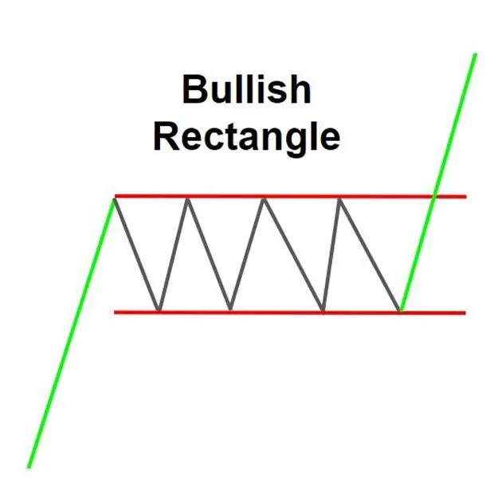
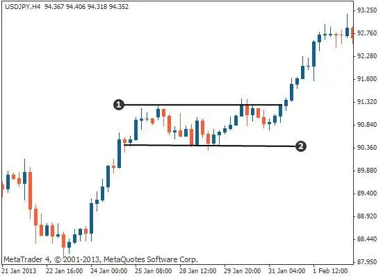

Bullish Rectangle Pattern হল একটি আপন্ট্রেন্ডের ধারাবাহিকতা চার্ট প্যাটার্ন যা
দুটি উত্থানের মধ্যে একটি সংক্ষি সংহতকরণের পুনঃমৃল্যায়ন দ্বারা গঠিত হয়।
Bullish Rectangle Pattern প্যাটার্নটি প্রায়শই একটি আয়তক্ষেত্রের মতো দেখায়, যার ফলে এর
নাম।
বুলিশ Rectangle Pattern প্যাটার্নটি একটি শক্তিশালী আপক্ট্রেন্ডের ইঙ্গিত দেয় এবং
ট্রেডাররা প্রায়শই এটিকে ট্রেডিংয়ের সুঘোগ হিসাবে ব্যবহার করেন। প্যাটার্নটিতে
প্রবেশ করার জন্য, ট্রেডাররা প্রায়শই Bullish Rectangle Pattern টির উ্ধ্বমুখী প্রতিরোধ স্তর ভেঙে
ট্রেডিং শুরু করেন।
Bullish Rectangle Pattern টির উচ্চতা হল Rectangle টির উপরের এবং নিচের দিকগুলির মধ্যে
দুরত্ব। Rectangle টির প্রস্থ হল Rectangle টির উভয় পক্ষের সময়ের ব্যবধান।
বুলিশ Rectangle প্যাটার্নটি একটি নির্ভরযোগ্য ট্রেডিং প্যাটার্ন নয়, তবে এটি একটি
শক্তিশালী আপক্ট্রেন্ডের ইঙ্গিত দেয় এবং ট্রেডাররা প্রায়শই এটিকে ট্রেডিংয়ের
সুযোগ হিসাবে ব্যবহার করেন।
